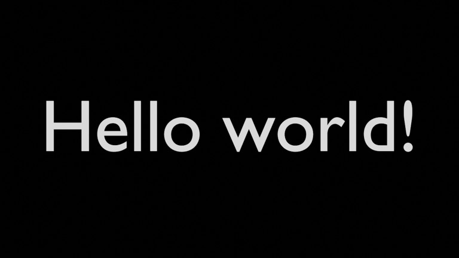

Hello world!
hello-telop
Minimal baseline: white Hello world! text centered on a black background.
source 6919fd4f51
| width | 1280 |
|---|---|
| height | 720 |
preview · validation · source · result · scene.blend · Actions #2
GitHub Actionsで生成したBlenderテロップ実験の公開ギャラリー。preview / validation / 動画を直接確認できます。

hello-telop
Minimal baseline: white Hello world! text centered on a black background.
source 6919fd4f51
| width | 1280 |
|---|---|
| height | 720 |
preview · validation · source · result · scene.blend · Actions #2